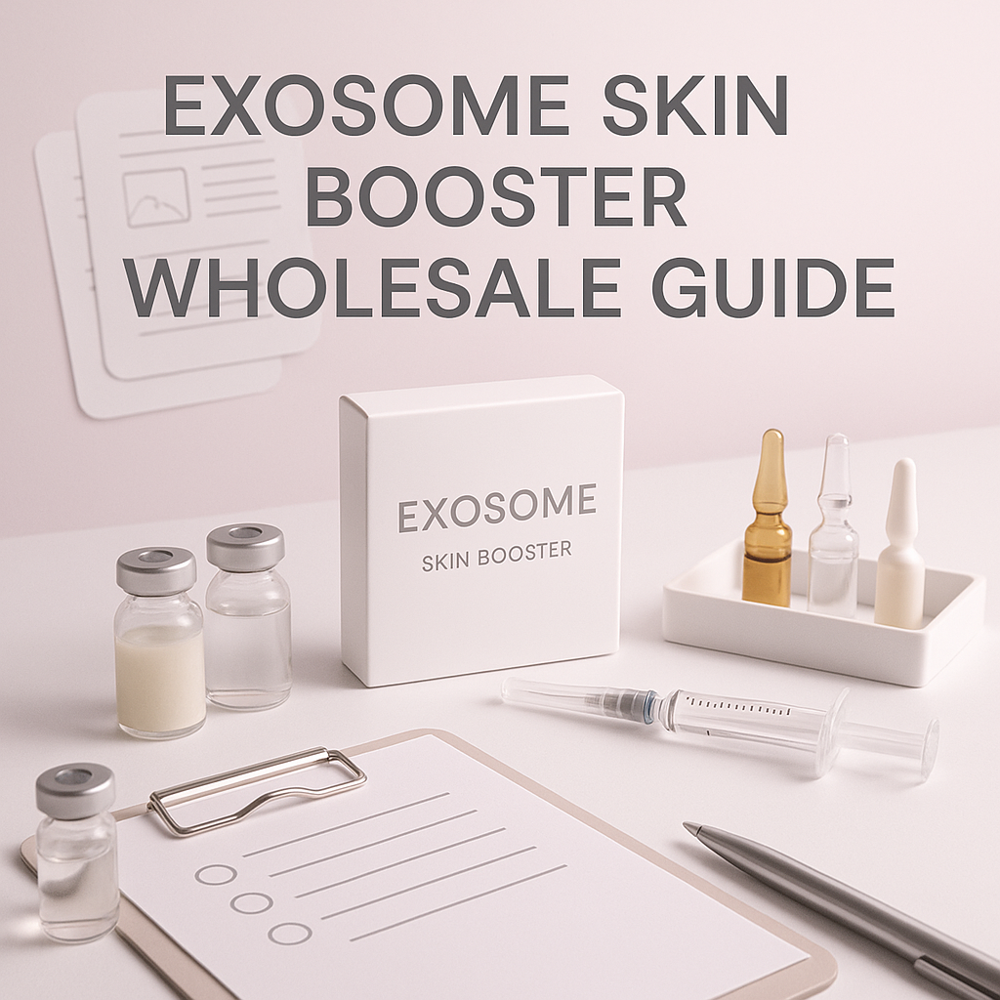
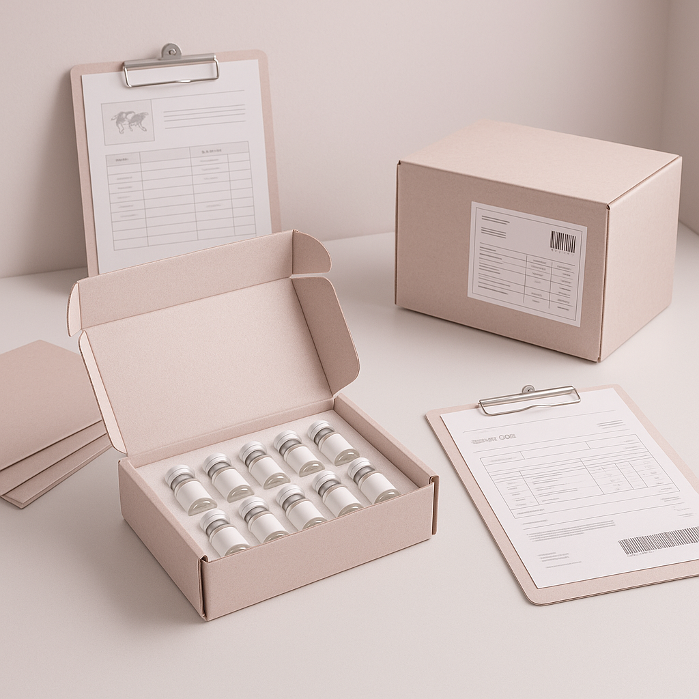

This guide provides essential insights for clinics, spas, and resellers on sourcing exosome skin boosters effectively.
As a professional buyer in the beauty and wellness industry, understanding the nuances of sourcing exosome skin boosters is crucial. With the growing popularity of these innovative products, clinics, spas, and resellers face challenges in selecting the right wholesale suppliers, ensuring quality, and managing logistics. This guide aims to address these challenges and provide a clear path for making informed purchasing decisions.
Exosome skin boosters represent a significant advancement in skincare, offering potential benefits for skin rejuvenation. However, navigating the wholesale market can be complex. This guide will equip you with the knowledge you need to source these products effectively, ensuring that you meet your business needs while providing quality offerings to your clients.
Key Takeaways
- Source from reputable suppliers to guarantee the quality and efficacy of exosome skin boosters.
- Evaluate packaging and batch visibility to maintain product integrity and traceability.
- Establish clear communication with suppliers regarding your specific needs and expectations.
- Plan orders based on minimum order quantities (MOQ) and potential reorders to optimize inventory management.
- Stay informed about shipping logistics and documentation requirements to avoid delays and ensure compliance.
What this guide covers
- Understanding exosome skin boosters
- Identifying relevant buyers
- Comparing product options
- Checklist for requesting quotes
- Logistics and documentation
- MOQ and reorder planning
- Frequently asked questions
What buyers should understand first

Exosome skin boosters are advanced skincare products derived from exosomes, which are extracellular vesicles that play a key role in cell communication and regeneration. These boosters are designed to enhance skin quality by promoting hydration, elasticity, and overall appearance. For clinics, spas, and resellers, understanding the basic properties and benefits of exosome skin boosters is essential for effective marketing and client education. However, this guide will focus on the procurement process rather than treatment protocols or application techniques.
As a buyer, it’s important to recognize that the market for exosome skin boosters is rapidly evolving. This means that staying updated on the latest formulations, supplier capabilities, and regulatory requirements is essential for making informed purchasing decisions. Buyers should prioritize sourcing from established brands that offer transparency regarding their product ingredients and manufacturing processes.
Which buyers is this most relevant for?
This guide is particularly relevant for clinics and spas looking to expand their product offerings, as well as resellers and distributors seeking to stock high-demand skincare products. Different business types may have varying needs; for instance, a clinic may prioritize product efficacy and client feedback, while a reseller may focus on pricing and availability. Understanding these scenarios will help you tailor your purchasing strategy effectively.
For clinics, the focus may be on integrating exosome skin boosters into existing treatment menus, while spas might aim to enhance their retail offerings. Resellers need to consider market trends and customer preferences to stock the most sought-after products. By understanding the unique needs of each buyer type, you can better position your procurement strategy to meet market demands.
How to compare options before ordering
When evaluating exosome skin boosters, consider the following criteria:
- Product Type: Ensure you know the specific formulations available, as they can vary significantly. Look for products that align with your clientele's needs.
- Brand Reputation: Research the supplier's history and customer reviews to gauge reliability. A reputable brand often signifies quality assurance.
- Packaging: Look for secure and professional packaging that preserves product integrity. Packaging should also be compliant with safety standards.
- Batch and Expiry Visibility: Ensure that suppliers provide clear information on batch numbers and expiry dates to maintain product safety and efficacy.
- Supplier Communication: Evaluate how responsive and informative the supplier is during your inquiries. Good communication is key to a successful partnership.
- Destination Requirements: Consider any specific regulations or requirements for shipping to your location, including customs considerations and import regulations.
Buyer checklist before requesting a quote

- Define your desired quantities and product variants to streamline your order process.
- Check the supplier's MOQ and ensure it aligns with your needs to avoid overstocking or stockouts.
- Prepare a list of questions regarding product specifications, sourcing, and supplier capabilities.
- Confirm shipping options and costs based on your location to budget effectively.
- Review the supplier's documentation process for compliance, including invoices and certificates of analysis.
- Assess potential reorder timelines based on your sales forecasts to maintain inventory levels.
Shipping, packing and documentation questions
Logistics are a critical aspect of the procurement process. When sourcing exosome skin boosters, consider the following:
- What shipping methods are available, and how do they affect delivery times? Evaluate express versus standard shipping options based on urgency.
- What packing materials are used to ensure product safety during transit? Look for suppliers who prioritize secure packaging to prevent damage.
- What documentation will be provided, such as invoices and certificates of analysis? Ensure that all required documents are included to facilitate smooth customs clearance.
- Are there any customs requirements that need to be addressed for your destination? Familiarize yourself with local regulations to avoid delays.
- How will you track your shipment once it has been dispatched? Ask suppliers about tracking options for better visibility.
MOQ, quotation and reorder planning
When planning your orders, it is essential to understand the minimum order quantities (MOQ) set by suppliers. These quantities can vary based on the product and supplier. Prepare your order details, including:
- Quantities for initial orders and potential reorders based on market demand.
- Variants of products you wish to stock to cater to diverse client preferences.
- Destination details to ensure accurate shipping quotes and compliance with local regulations.
SOLA can assist in confirming current availability and providing a wholesale quotation tailored to your needs. By engaging with SOLA, you can streamline your procurement process and ensure that you have access to high-quality products.
FAQ
What is an exosome skin booster?
An exosome skin booster is a skincare product that utilizes exosomes to promote skin rejuvenation and hydration.
How do I find a reliable wholesale supplier?
Research suppliers through reviews, industry recommendations, and by evaluating their communication practices. Look for suppliers with a proven track record.
What should I consider regarding shipping logistics?
Consider shipping methods, packing materials, and documentation required for your destination to ensure timely and safe delivery.
What is the typical MOQ for exosome skin boosters?
The MOQ can vary by supplier, so it's essential to confirm this before placing an order to avoid unexpected costs.
How can I prepare for reorder planning?
Analyze your sales data to forecast demand and determine optimal reorder quantities to maintain inventory without overstocking.
Contact SOLA for wholesale quotation via WhatsApp.
Planning a wholesale request?
Send product names, quantities and destination for a tailored discussion.
Contact SOLA on WhatsApp →General educational content for professional buyers. Not medical, legal, regulatory or import advice.